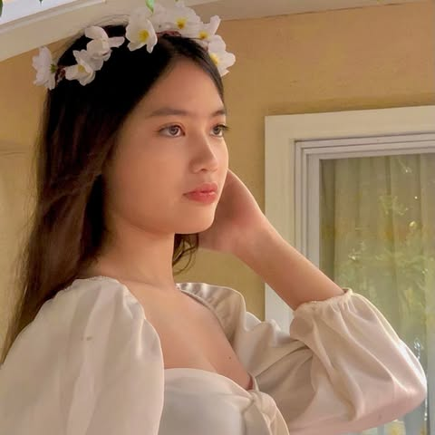
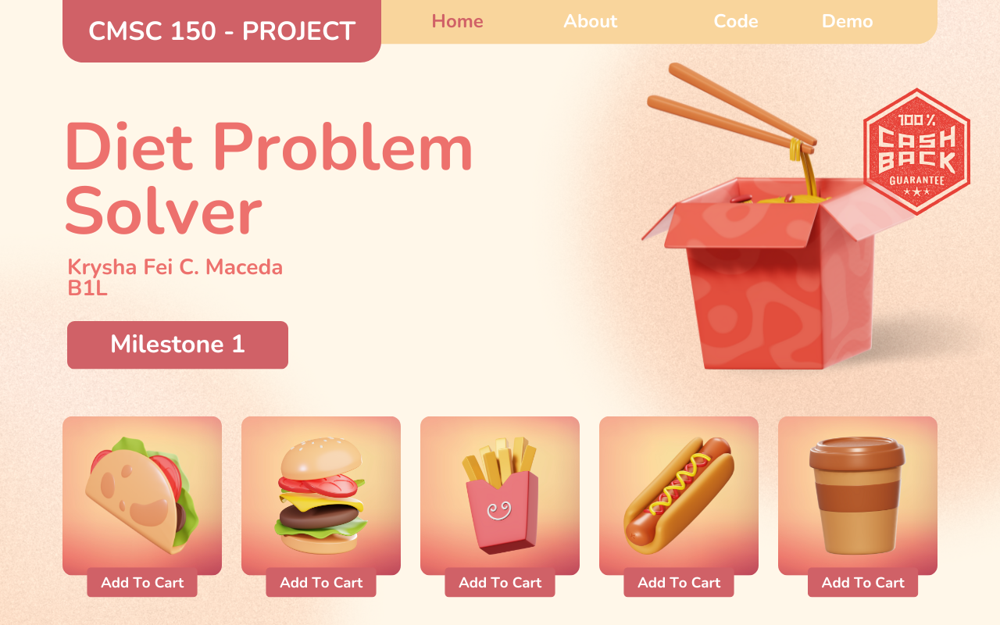
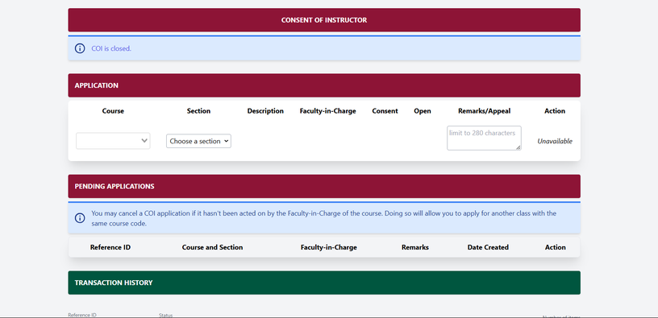
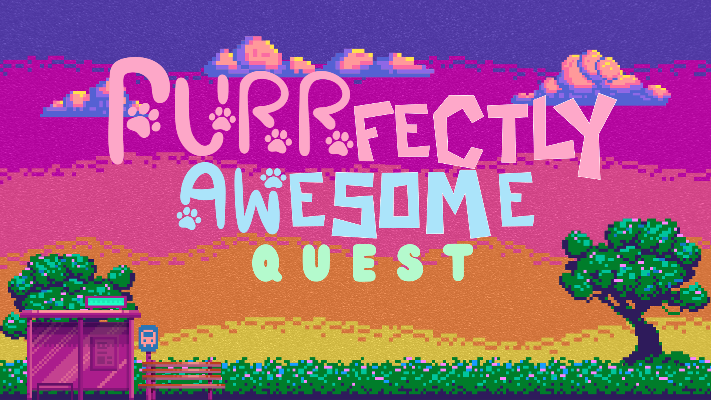

I have always been drawn to the power of data, which led me to pursue a degree in Computer Science. To strengthen my analytical and computational skills, I chose Computer Science as my elective, allowing me to explore programming and data-driven problem-solving. With a passion for turning raw data into meaningful insights, I aspire to become a Data Scientist who can make a real impact through innovation and technology.

The Diet Problem Solver is an R-based program that utilizes the Simplex Method to determine the optimal food servings that meet nutritional requirements while staying within a given budget.

The Student Information System Project is a digital platform designed to efficiently manage and organize student records, including personal details, academic performance, and enrollment information.

UPLB Cats and Dogs is a competitive game where cats and dogs battle for food, using unique skills to hinder their opponents, with the winner being the one who collects the most food.
The ATM Simulation is a program that mimics real-world ATM transactions, allowing users to perform operations like withdrawals, deposits, balance inquiries, and fund transfers in a virtual banking environment.
I excel in developing efficient solutions for complex problems, leveraging my analytical and programming skills to create effective outcomes. I have experience in organizing events, competitions, and research projects, ensuring smooth execution and meaningful engagement. Additionally, I am adept at managing teams and coordinating with organizations to achieve shared goals. My strong writing skills enable me to craft clear and concise scripts, documentation, and reports, contributing to well-structured and professional communications.
I have always been fascinated by the power of data, which led me to pursue a degree in Computer Science. To enhance my analytical skills, I chose Computer Science as my elective, equipping myself with the necessary programming and computational techniques. My goal is to become a Data Scientist, using data-driven insights to solve real-world problems.